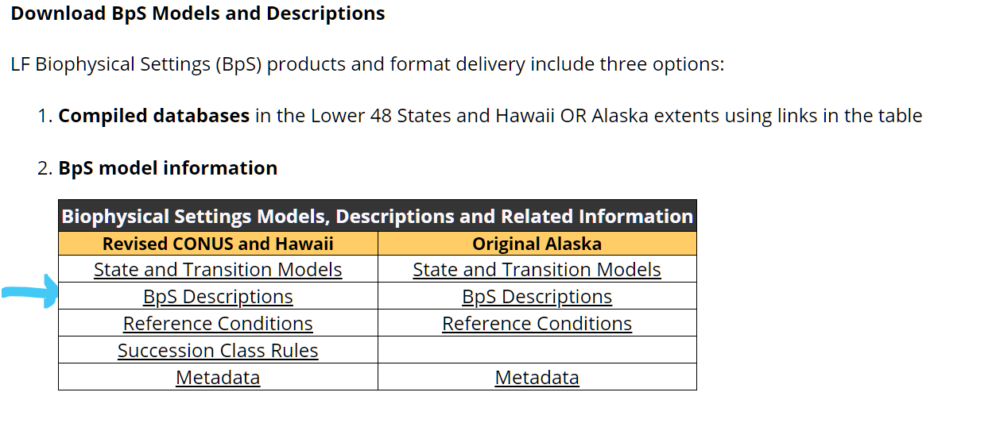
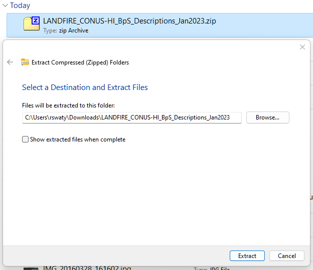
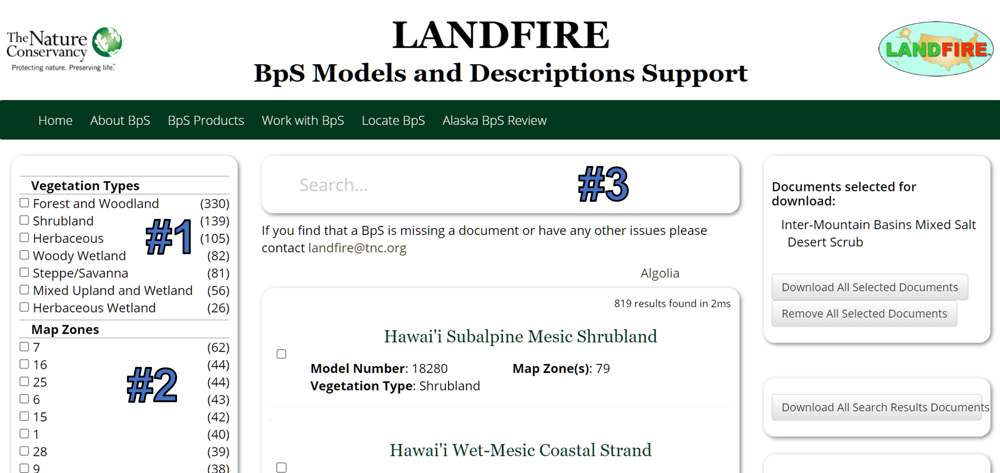
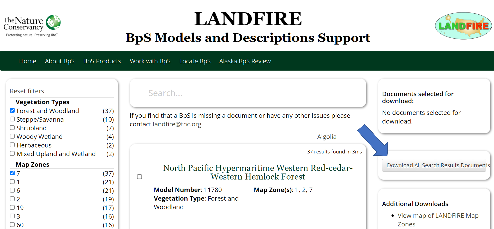
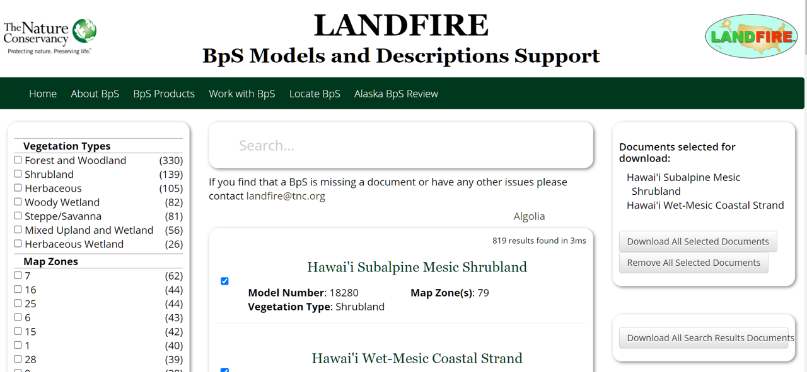

1 BpS Descriptions
1.1 What you will learn here
A foundational LANDFIRE product are the Biophysical Settings (BpS) Descriptions and Models. They set the stage for development of many LANDFIRE products such as the Biophysical Settings and Succession Class spatial datasets. On this page we will:
- Learn how to download all of the BpS Descriptions
- Learn how to download one or a set of BpS Descriptions
- Become familiar with:
- The concept of BpS and succession class
- How LANDFIRE documented ‘reference conditions’ (i.e., how our BpSs looked and functioned prior to European colonization)
- What is contained in the BpS descriptions
- Share links for further learning about BpSs and related topics
1.2 Downloading all of the BpS descriptions
While we typically work with one or a small set of BpSs, there are times when downloading the entire set developed for the lower 48 states plus Hawaii and Alaska is most efficient.
To download all BpS descriptions:
- Navigate to LANDFIRE’s BpS Description and Quantitative Models Webpage
- Scroll down to Download BpS Models and Descriptions Section (see below).
- Click on the “BpS Descriptions” which will trigger downloading of a .zip file named “LANDFIRE_CONUS-HI_BpS_Descriptions_Jan2023.zip” that has 819 Word Documents. This file will most likely land in your “Downloads” directory.
- Use your extraction tool of choice to unzip and explore. One possible way if you are using Windows is to:
- right click the file
- select ‘Extract all’ to access the Windows extraction tool (see below).
1.2.0.1 Screenshots for downloading and unzipping all BpS descriptions
Where to click to download all BpS descriptions.

Windows extraction tool being used to unzip all BpS descriptions file.

1.3 Downloading one or a set of BpS documents
In support of a BpS review process we completed recently, we created a BpS Models and Descriptions Support website, which has a page that allows for searching for, and downloading a single or a set of BpS Descriptions.
1.3.1 Select your BpSs of interest
Go to this page of our website.
There are multiple ways to select BpS documents to download, including:
- Get all BpS documents by one or more broad Vegetation Types (#1 on ‘Ways to select’ screenshot below)
- Get all BpS documents by one or more LANDFIRE Map Zones (#2 on ‘Ways to select’ screenshot below). To get a Map Zone map you can click the “View map of LANDFIRE Map Zones” text (highlighted with blue arrow on ‘Ways to download’ screenshot below), or click https://landfirereview.org/IMG/USmapzones-v1_July2015.jpg
Checking boxes will select the ‘Vegetation Types’ and/or ‘Map Zones’ and/or specific BpSs for filtering or downloading purposes.
Additionally, you can search for a BpS of interest by typing in the ‘Search…’ box(#3 on ‘Ways to select’ screenshot below). A few things to keep in mind when searching:
- Genus and/or species, common or Latin (e.g., ‘Fraxinus’, or ‘White Ash’ )
- Most text terms will work, numbers will not. For example, ‘hurricane’ will work return BpSs, ‘1362’ (an actual BpS number) will not.
- You can first filter by ‘Vegetation Types’ and/or ‘Map Zones’, then search to narrow results.
1.3.2 Download documents of interest
Once you have selected the BpSs you want to get descriptions for you can take one more step to get your documents:
- If you want all of the BpSs for selected ‘Vegetation Types’ and/or ‘Map Zones’ you will click the ‘Download All Search Results Documents’ button (indicated with arrow on ‘Download all’ screenshot below).
- If you have checked specific BpSs for download, you will click the ‘Download All Selected Documents’ button (inidcated with an arrow on ‘Download selected’ screenshot below).
Clicking either of the ‘Download’ buttons will initiate download of a .zip file that will most likely land in your ‘Downloads’ folder. See ‘Windows extraction tool being used to unzip all BpS descriptions file’ screenshot above for an example of how to unzip.
Beware when clicking the ‘Download All Search Results Documents’ button. If not careful you will end up with a huge download of many more documents than you want! Make sure to filter by ‘Vegetation Types’ and/or ‘Map Zones’ first.
1.3.2.1 Screenshots of selecting and downloading BpSs
Ways to select your BpS(s) of interest.

Downloading all BpSs from filtering by ‘Vegetation Types’ and/or ‘Map Zones’

Downloading selected BpSs
